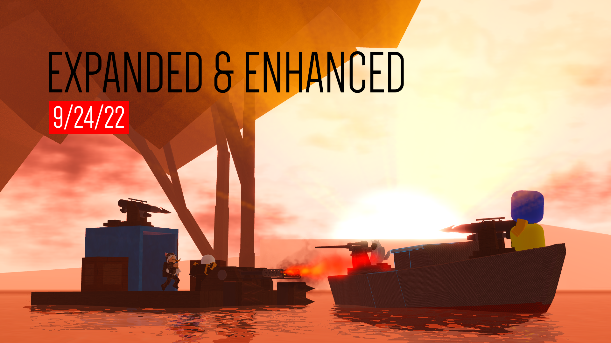
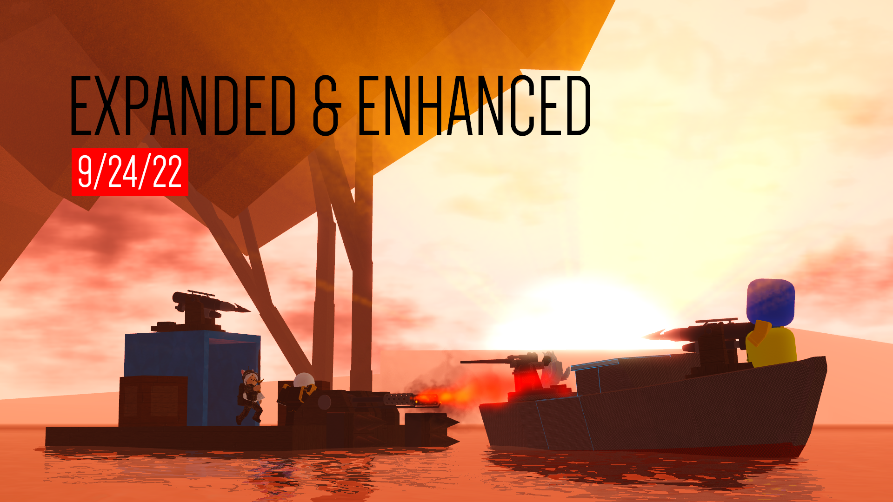

Hero Quest
Link: Hero Quest
Description: Hero Quest is a fully-fledged launched beta game developed for my current employer and good friend. It includes hundreds of module scripts and over 45,000 lines of code, all written by me. The game features a robust system for character progression, quests, combat mechanics, cross-server parties, advanced npc pathfinding, procedural dungeon generation, etc.

Technologies Used: Roblox Studio, Lua, Rojo, VSCode, NodeJS, GitHub, Bitbucket, Sourcetree
Role: Lead Developer
Owner: Finite Gaming
Whatever Floats Your Boat
Link: WFYB
Description: WFYB is a game made by Quenty, I was not a part of its original development, however, I made 5+ published updates working with the rest of the staff team while the game was still active. Some of the changes i made involved heavy combat balancing with the introduction of global damage types, a projectile hit detection rework using spherecasting and several new weapons, lots of quality of life changes/additions, bug fixes, security patches, and much more. I have since resigned as I needed to devote more time to Hero Quest.
Technologies Used: Roblox Studio, Lua, Rojo, VSCode
Role: Developer/Lead Programmer
Owner: Studio Koi Koi (Originally Quenty)
 

Advanced Projectile System
Link: Gun Demo
Description: This projectile system is very modular and expandable, can be moved to any game, and easily integrated as it uses binders. All the projectile settings are very configurable which lets a variety of projectiles be created, from bouncing ones that don't damage, to straight flying rockets that explode, all with proper cross-client syncing and server validation. Originally made for a group of star wars game makers, who have since scammed me.
Technologies Used: Roblox Studio, Lua, Rojo, VSCode
Downfall (Eclipsis remake)
Link: Downfall
Description: This game is an attempt at a remake of the game Eclipsis, it has many complex systems including advanced graph theory algorithms for pipe pathfinding, very fast noise based terrain generation with big cells, a nice placement system, and much more. I have since abandoned the project.
Technologies Used: Roblox Studio, Lua, Rojo, VSCode, GitHub
Gif decoder
Link: Downfall (Seen in downfall)
Description: Just something i made when i was bored that i figured hasn't been done before, the version in the first video used actual gif data parsing at runtime but i realized it could be used to play gif's or any display any content that violates TOS, so the current published version uses imageframes.
Technologies Used: Roblox Studio, Lua, Rojo, VSCode
Aim trainer
Link: Aim trainer
Description: Old aim trainer game i made for my friend, not up to par with my current work/skillset but still a demonstration of my capabilities. Includes customizable tool stats, hitbox sizes, movement speed, etc.
Technologies Used: Roblox Studio, Lua
Additional Projects
Here are some other projects I have worked on:
- Stratagey game: A simple rts game very similar to the conquerors 3 that involved micro managing structures to make money and mini humanoids that can kill eachother with the goal of map control.
- Survival game: Back in 2021 i made a cool little survival game that had all different types of tools including pickaxes, axes, fishing rods that actually work, etc, placable items like crafting benches, furnaces, chairs, etc, a working hunger system with harvestable food from animals/foliage, a dynamic placement system that allowed for structure building with snapping, and perlin noise based island generation with lakes.